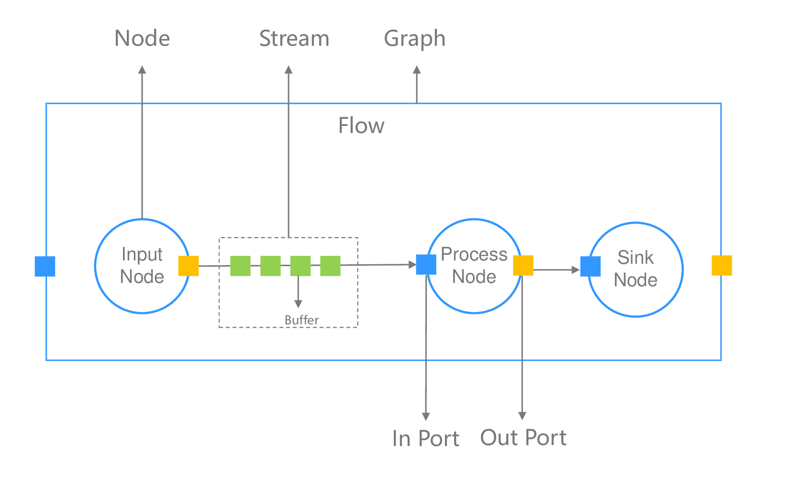

框架概念
ModelBox为更好的支撑应用流程，抽象了许多概念，理解这些概念对于应用问题的解决将会有很大帮助。
基础概念
相信在阅读完基本概念章节后，开发者已经对ModelBox的整体概念有了初步的认识，这可能已经足够应付部分的使用场景，但还是建议继续如下的阅读，帮助对ModelBox有更深层次的理解，助力应用的开发。
本章节主要从下图中的几个概念对ModelBox进行讲解，它们是ModelBox中十分重要的概念，开发者将时刻与它们打交道。

数据经由INPUT Node产生，按箭头指向，流向Process Node，Process Node处理数据后，在发送给Sink Node汇总处理结果，这是一个典型的数据处理过程，这个过程中，涉及到了图(Graph)、节点(Node)、端口(Port)、数据流(Stream)、数据缓存(Buffer)。
Graph
图定义了ModelBox的执行过程，ModelBox根据图中指示的路径，调度Node的功能，处理Buffer数据。图的详细说明可阅读图章节的内容。
Node
图的基本组成，是功能单元在图中的实例化，和输入、输出Port一起组成了数据的处理实体。不同Node间由边(edge)连接，边是有向的。功能单元的详细说明可阅读功能单元的内容。
Port
节点上的数据连接点，可用于数据的输入或者输出，在图中两个Node之间的连接需要指定Port。
Stream
一系列关联的顺序数据实体组成了数据流，在ModelBox中数据流是主要处理对象，比如视频流，音频数据流等。数据流的详细说明可阅读Stream流的内容。
Buffer
流中包含多个数据实体，单个数据实体在ModelBox中由buffer承载。单个buffer包含了数据的元数据Meta部分和数据内容部分，它是数据在Node间的流动实体。Buffer的详细说明可阅读Buffer的内容。